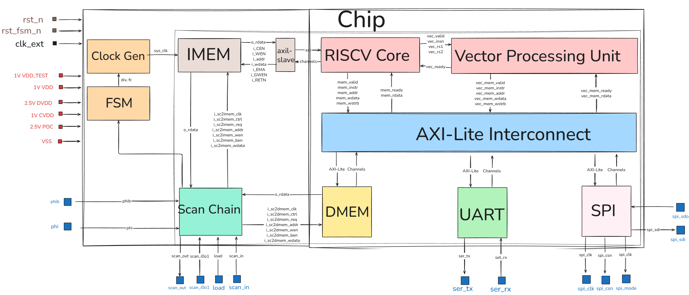
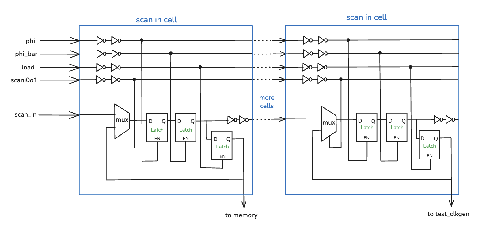
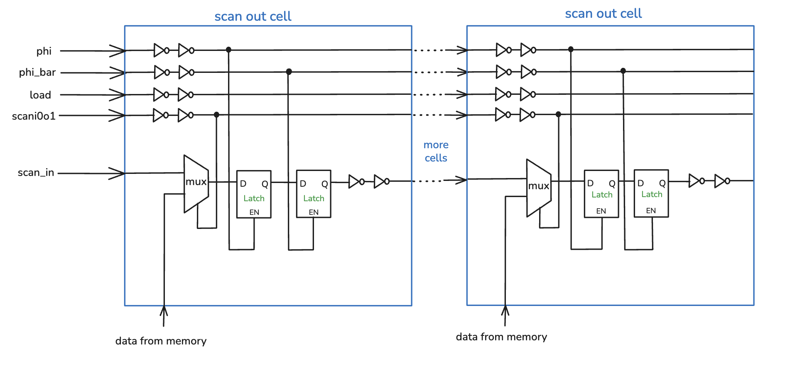
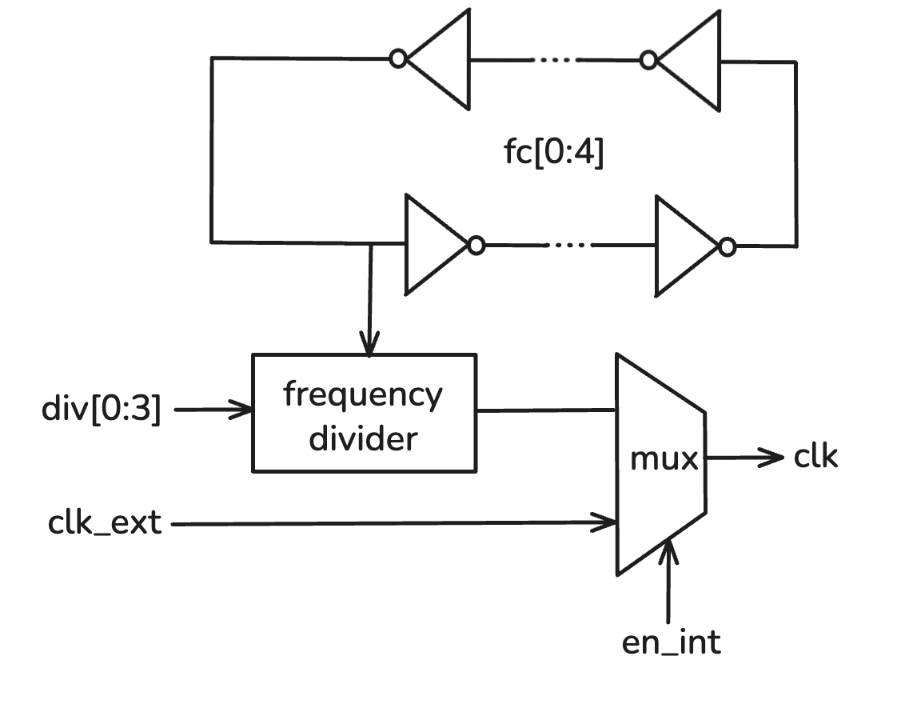
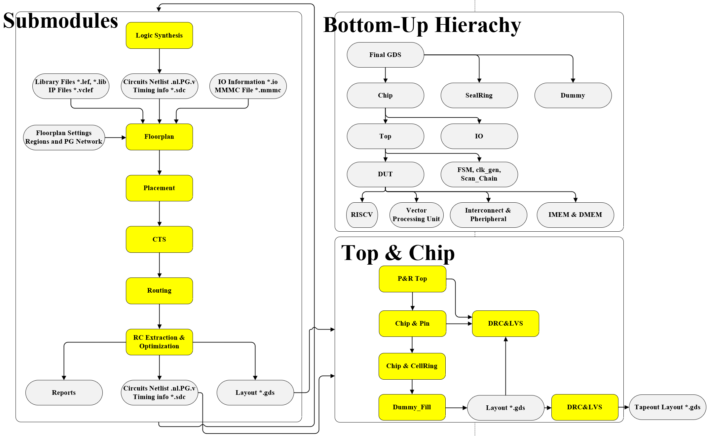
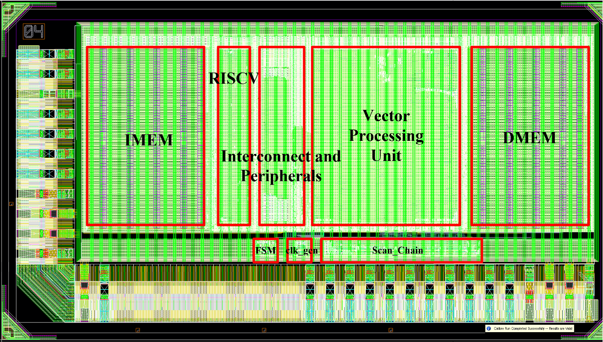
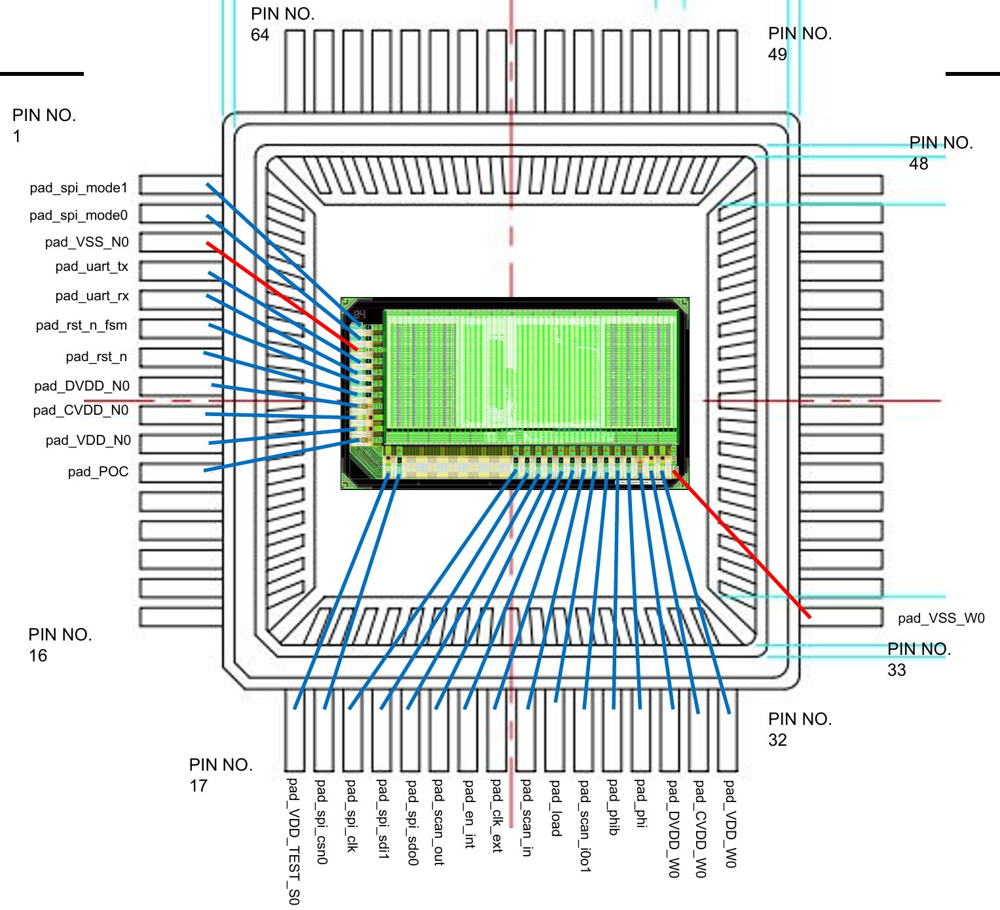
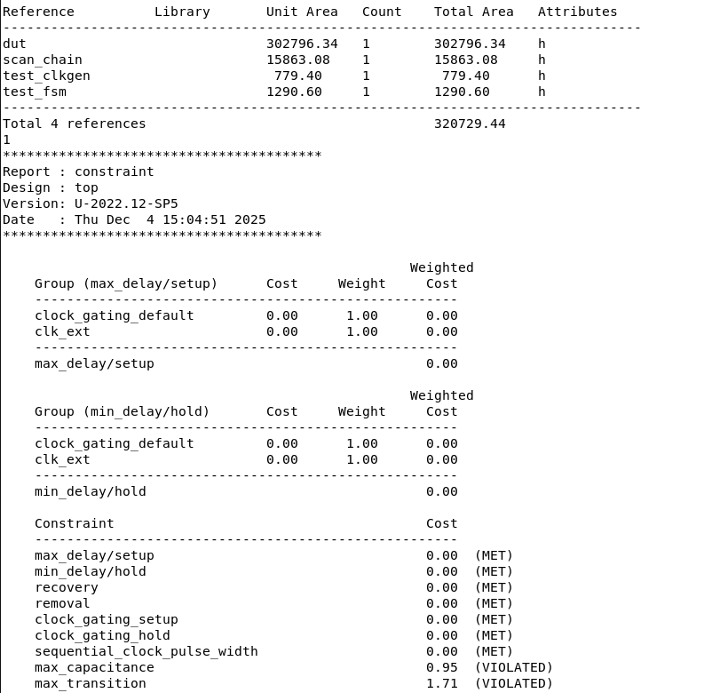
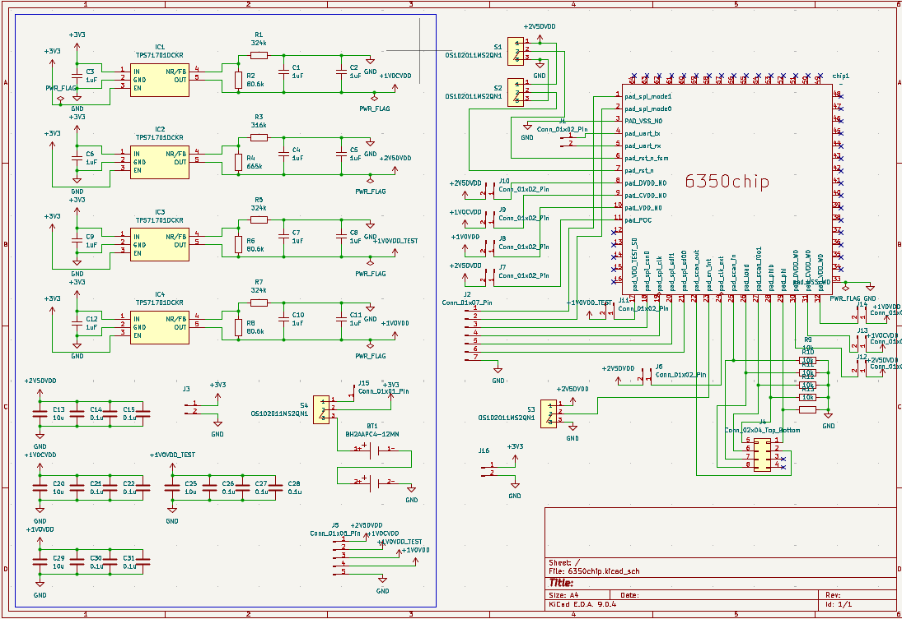
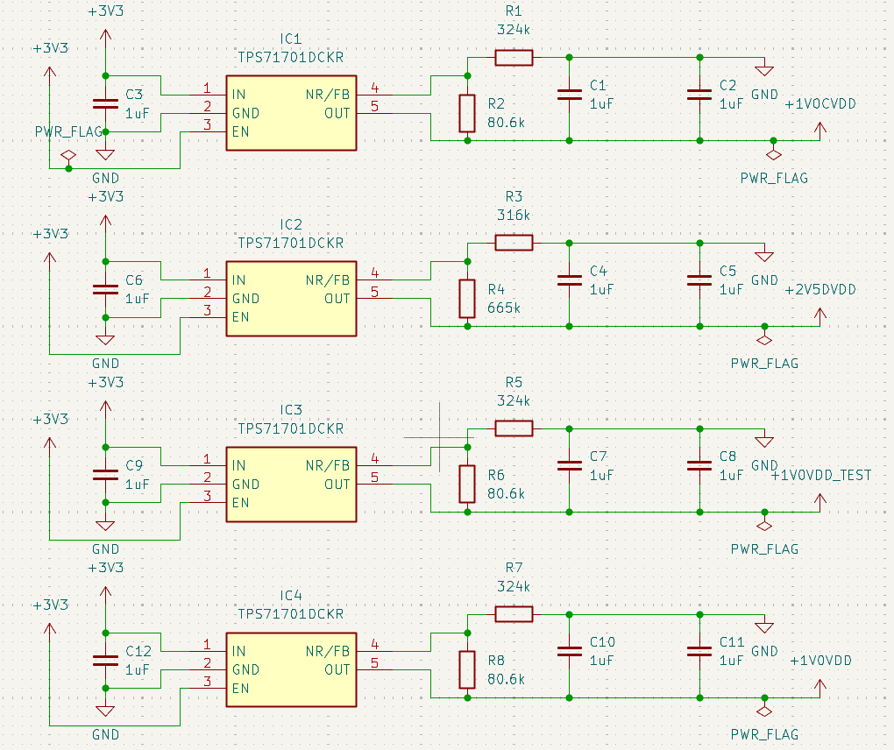

Introduction
Welcome to the SoC team page! We present a complete RISC-V System-on-Chip (SoC) implemented and
taped out in TSMC 65-nm technology. This work was developed as part of Columbia University’s
EE6350 VLSI Laboratory, and we gratefully acknowledge the supervision of Prof. Mingoo Seok,
the generous support from Apple Inc., and the support of the course TAs.
The chip adopts a CPU–VPU heterogeneous architecture, integrating the open-source PicoRV32 RISC-V
CPU and a custom-designed VPU, along with on-chip memory and essential I/O (UART, SPI), to
accelerate data-parallel workloads such as vector operations and convolution-like kernels used in
image processing and lightweight AI pipelines. The CPU provides system-level programmability and
orchestration, while the VPU couples a SIMD datapath with a dedicated control plane for vector
decode, memory sequencing, and PE scheduling. This separation enables straightforward CPU-only vs.
VPU-offloaded benchmarking, making acceleration benefits easy to reproduce and quantify on silicon.
From RTL design and verification through synthesis, place-and-route, and pad integration, we
completed an end-to-end ASIC flow and validated the chip via post-silicon board bring-up and
testing. The result is a compact, software-programmable platform that demonstrates digital system
integration and silicon-proven hardware/software co-design.
System Architecture
This diagram illustrates the architecture of our RISC-V based System-on-Chip (SoC). At its core, a RISC-V processor is paired with a dedicated Vector Processing Unit to handle accelerated parallel computations. These processing units communicate with system resources via a central AXI-Lite Interconnect. Essential external communication is handled through UART and SPI interfaces. Additionally, the design incorporates support infrastructure, including a Clock Generator, Finite State Machine (FSM), and a Scan Chain for hardware testing and debugging.
Key Highlights: Component Breakdown
-
Vector Processing Unit (VPU)
This custom VPU is a PCPI-attached accelerator for PicoRV32 that delivers silicon-proven speedup on data-parallel kernels while keeping the CPU microarchitecture unchanged. It integrates a dedicated control plane (instruction decode + multi-cycle control FSM) that autonomously manages instruction sequencing, base/stride address generation, memory handshaking, and PE scheduling, so the CPU simply issues an offload and waits for completion via pcpi_wait/pcpi_ready. Vector state is maintained in small control registers (e.g., vl and vtype), from which SEW/LMUL are derived to parameterize datapath packing and memory behavior. Operands/results are stored in a 288-bit vector register file, with an unpack/pack stage feeding a 9-lane SIMD PE array for element-wise compute (e.g., vector multiply) matched to the register packing granularity. For data movement, a vector load/store subsystem converts each vector memory instruction into a tightly sequenced stream of back-to-back 32-bit DMEM transfers, moving up to nine 32-bit lanes per vector and eliminating scalar loop/address-update overhead. This hardware-sequenced, aggregated access pattern reduces per-transaction overhead and helps sustain throughput on a 32-bit, non-burst memory interface, making the design especially effective for convolution- and MAC-heavy workloads and enabling clean, reproducible CPU-only vs. CPU+VPU benchmarking under the same workload code. Across our measured demos, end-to-end speedup increases monotonically with VPU utilization (vector intensity), ranging from ~1× at low utilization up to ~6× at high utilization. As a result, the SoC is particularly well-suited for CNN-style AI kernels—where the inner loops are dominated by vectorizable multiply–accumulate (MAC) patterns and regular tensor-like memory access—so this design can be viewed as a compact, AI-oriented accelerator chip for convolutional workloads.
For technical details on the VPU, reach out to Jiajun Jiang.
-
CPU Core: picorv32
The system is anchored by the PicoRV32, a robust and widely adopted open-source RISC-V CPU core designed for high reliability and area efficiency. It implements the standard RISC-V RV32I Instruction Set Architecture (ISA), providing a comprehensive suite of base integer instructions. Architecturally, the PicoRV32 is engineered with a focus on timing closure; its design minimizes logic depth in the critical path, allowing the core to achieve a high maximum operating frequency 270MHz in TSMC65nm even in area-constrained layouts. Crucially, the core features a dedicated Pico Co-Processor Interface (PCPI). This low-latency interface serves as the bridge to our custom Vector Processing Unit (VPU), allowing the PicoRV32 to seamlessly offload complex vector instructions while maintaining rigorous control over system flow and data consistency. Below Shows the Finite State Machine of this simple RISCV Core.

-
Bus Interconnect: AXI-Lite Interconnect
The Opensource AXI-Lite Interconnect we we adopted supports multiple masters and slaves. The maximum frequency after synthesizing is around 500MHz and the area is pretty small. It does not supports burst transactions, OoO and outstanding in AXI protocol.
System Memory Map
Device / Region Start Address End Address Size Instruction Memory (IMEM) 0x0000_00000x0000_7FFF32 KB ( 0x8000)Data Memory (DMEM) 0x0000_80000x0000_FFFF32 KB ( 0x8000)UART 0x0010_00000x0010_000F16 Bytes ( 0x10)SPI 0x0010_00000x0010_00A3164 Bytes ( 0xA4) -
Memory Subsystem: IMEM & DMEM
To maximize on-chip storage efficiency, the SoC integrates 64KB of SRAM, symmetrically divided into 32KB for Instruction Memory (IMEM) and 32KB for Data Memory (DMEM). We utilized the ARM Artisan Memory Compiler to generate these high-density, single-port memory macros. To ensure seamless connectivity, custom wrappers were developed to bridge the memory interface with the processor core. Furthermore, these wrappers facilitate system initialization, allowing instructions and data to be pre-loaded directly through the scan chain.
-
I/O Peripherals: UART & SPI
-
DFT Module: Scan Chain, Clock Generator, Testing FSM
Our chip uses a custom, academic-level DFT infrastructure whose central element is a scan chain, together with the on-chip clock generator and the mode-control FSM. These modules are used for post-silicon functional testing, it provides the way to load data into the on-chip memories and configuration registers and to read internal state back out of the fabricated chip.
Scan Chain
The scan chain contains 252 scan cells connected between the external pins scan_in and scan_out. A simplified diagram illustration as shown in Figure below, each cell corresponds to one bit of an internal signal: instruction/data memory address and data buses, as well as the configuration registers of the clock generator and the testing FSM. In normal operation the memories are driven directly by the core, but in test mode the scan chain can temporarily take over, driving or sampling these ports and even reading back the contents of the instruction and data memories to verify that the chip is operating correctly.

The below Figure illustrate the internal structure of the scan cells and their connection in the chain. Regarding the scan chain operation, a control signal scan_i0o1 selects the operating mode. Internally, both the scan-in and scan-out cells contain a small input-select MUX plus two back-to-back transparent latches clocked by non-overlapping scan clocks; this two-latch structure avoids hold-time issues that are common in long shift registers. In scan-in mode, the MUX in a scan-in cell chooses between the serial input from the previous cell (to shift new data through the chain) and a feedback path that simply preserves the current value during normal execution. In scan-out mode, the corresponding MUX in a scan-out cell selects either the previous cell's serial data for shifting, or the design signal that we want to observe, such as a bit of instruction or data memory.
 During testing, we stream a serial bit pattern into scan_in while toggling the scan clock. After 252 shift cycles, the pattern has propagated to all cells in the chain. When scan_i0o1 is configured for scan-in and the load signal is pulsed, the contents of the scan cells are written into the connected memories and control registers: for example, a 32-bit instruction address together with its 32-bit instruction word, or new settings for the clock generator (div, fc, en_int,) and the FSM (mode and cycle count). Also, some of the scan cells provides the “virtual” memory clock imem_clk/dmem_clk, we create a memory write by first loading the desired pattern, then re-loading the same pattern with that particular bit toggled from low to high to emulate a rising edge on the memory clock.
The process of reading internal state back is symmetric. With scan_i0o1 set to scan-out mode, the memory wrappers and selected registers feed their data into the scan-out cells. After latching these values, we generate the required number of scan clock cycles to shift the 252-bit vector to the scan_out pin, where the tester observes it as a serial data stream. In this way we can verify program execution by dumping results from data memory or checking configuration registers, all using the same unified scan interface.Clock Generator
To support flexible post-silicon testing, normal operation, and control over low, high, and custom operating frequencies, our SoC includes a programmable on-chip clock generator.

All of its frequency control signals are loaded through the scan chain, where it can be controlled by: fc[0:4] as fine-tune to adjust the oscillator length for fine frequency steps. div[0:3] sets the digital divider ratio for coarse frequency scaling. In addition to frequency control signals, it also has a control signal from chip I/O en_int that allows it to choose between the internal generated clock path and an external clock clk_ext.
These controls work together to generate the system clock clk with a selectable frequency and source, giving us both a tunable internal clock and a safe external-clock fallback.Testing FSM
For controlled post-silicon debugging we also added a small finite-state machine (FSM) that drives the clock-gating logic of the chip. The FSM supports three operating modes, all of its mode control signals are loaded through the scan chain. When the scan chain is being used to shift data in or out, the FSM sits in an idle state and completely blocks the system clock so that no internal state changes. For normal run mode, the FSM simply lets the selected clock source (internal or external) propagate to the rest of the SoC. In countdown mode, the FSM enables the clock for a programmable number of cycles and then turns it off again, allowing cycle-accurate inspection of the design.
Design Flow
The following diagram outlines the complete RTL-to-GDSII design flow implemented for this project. It highlights the transition from behavioral Verilog RTL through Synthesis and Place & Route, utilizing industry-standard tools for verification at every stage.

RTL Design
The RTL (Register Transfer Level) design serves as the core of our digital implementation, bridging the gap between high-level algorithms and physical hardware.
Hierarchical Design & Verification
We adopted a rigorous Bottom-Up Implementation strategy. Design work starts with coding individual, low-level submodules. Once these leaf blocks are completed, they are integrated into larger parent modules, eventually culminating in the Top-Level SoC.
Verification follows a corresponding layered approach:
- Unit-Level Verification: Submodules are first verified in isolation using dedicated testbenches to ensure local correctness.
- Integration Verification: As blocks are assembled, verification focuses on interface protocols and data flow between modules.
- Full-Chip Verification: The complete design is simulated (using tools like ModelSim, VCS, and Verdi) and cross-compared against the C reference model to validate system-wide functionality.
| Version | Feature |
|---|---|
| 0.0 | Basic Model from PicoRV32 RISCV Core |
| 0.1 | Integrated Instruction SRAM with memory wrappers |
| 0.2 | Integrated AXI-Lite Interconnect |
| 0.3 | Integrated Data SRAM with memory wrappers |
| 0.4 | Integrated Scan Chain |
| 0.5 | Integrated UART and SPI |
| 0.6 | Integrated Vector Processing Unit |
| 0.7 | Integrated Clock Generator, Scan Chain and FSM |
| 0.8 | Modified Vector Processing Unit for Smaller Size |
| 0.9 | Integrated Pad Frame and IO Cells |
| 1.0 | Verified Functionality from Chip Level and RTL Freeze |
Synthesis
We used Synopsys Design Compiler for logic synthesis. Before running synthesis, we prepared a complete SDC file that defined all necessary constraints, including clock definitions, clock constraints, drive and load constraints, operating conditions, and wire-load models. Specifically, the SDC file included parameters such as clock name, clock period, clock uncertainty, clock transition, as well as input and output delay constraints. Our chosen synthesis strategy followed a bottom-to-top approach. We first synthesized several major submodules independently, such as the CPU core and the VPU module. The remaining modules were synthesized together within the top-level design, while the pre-synthesized blocks were marked as don't touch to preserve their optimized structures. This process allowed us to generate the complete set of netlist files for the entire chip..
Physical Design
Auto P&R
We used Cadence Innovus for our physical design. In our place-and-route flow, the major steps included: loading design files, floorplanning, power routing, cell placement, pre-CTS optimization, clock tree synthesis (CTS), signal routing, RC parasitic extraction, filler cell insertion, design verification, and final GDS files output. The physical hierarchy of the chip consists of submodules, the top module, the chip-level module, and the IO pads. Our place-and-route strategy followed the same bottom-up approach used during synthesis. The Dmem and Imem blocks used existing layout macros, while modules such as the SPI block, scan chain, test FSM, coprocessor, and CPU core were placed and routed independently. The remaining modules were integrated and routed within the top-level design.
The final result is the complete chip-level layout, as shown in the figure. The two memory blocks are placed on opposite ends of the layout, while the central region contains key macros such as the CPU core and the VPU. The scan chain and clock generator are positioned toward the outer region but kept as close as possible to the center to minimize clock skew. Surrounding the entire design are the required IO pads that interface the chip with the external system..
IO Pad
Below shows the IO Pad integration based on LQFP64L: We have 11 + 16 + 1 = 28 IOs. And these IOs includes Input/Output Signals(SPI, UART, Scan_Chain, rst_n, clk), POC, CVDD, DVDD, VDD, VDD_TEST, GND. We tried to minimize our IO number because we need a bigger area for logic circuits.
Package
Below is the picture of our taped out chip with bonding wires and packages.
STA & Sign-off
During the STA phase, we used PrimeTime with a target operating frequency of 100 MHz. After place-and-route, the clock uncertainty was controlled within approximately 50 ns. According to the timing reports, all critical paths within the top module met their setup and hold time requirements, and no setup or hold violations were observed. In addition, the asynchronous reset signals passed all recovery and removal checks without violations.

After completing the physical design, we performed full signoff verification on each submodule and the top-level design. Using Mentor Calibre, we conducted DRC, LVS, ESD, and antenna rule checks to ensure that all results were clean. Only after passing all signoff criteria did we proceed with the final GDS files export of our chip.
PPA optimization
In our chip design, we placed strong emphasis on PPA (Power, Performance, Area) optimization. Several low-power techniques were applied throughout the design stages:
- Fixed Voltage Domains: The chip uses fixed voltage domains, with 2.5V for IO pads and 1.0V for the core logic, ensuring stable and efficient power distribution.
- Clock Division: We applied clock division techniques. For example, the SPI module operates on a divided clock derived from the main clock, reducing switching activity and lowering dynamic power consumption.
- RTL Resource Sharing: At the RTL level, we adopted resource sharing, reusing registers and functional units whenever possible to reduce redundant hardware.
- State Encoding Optimizations: State encoding optimizations were applied, such as using Gray code instead of conventional binary encoding to minimize bit toggles and reduce dynamic power.
- Automatic Clock Gating: During synthesis, automatic clock gating was enabled to shut off clocks when modules are idle. Although this increases area slightly, it significantly reduces dynamic power consumption.
- High-Vth Cell Insertion: In the physical design stage, we selectively replaced LVT (Low-Vth) cells with HVT (High-Vth) cells, which reduces leakage power at the cost of some performance and area overhead.
These combined strategies allowed us to effectively manage power while maintaining overall performance and design efficiency.
Software & Testing Flow
The software and testing flow converts C-level test programs into memory-mapped initialization data, generates scan sequences, and loads them onto silicon through an FPGA-based scan controller. This unified environment supports both pre-silicon verification and post-silicon validation of the CPU, memory system, and VPU.
Software Development
Test applications are written in C and compiled using a customized RISC-V GCC toolchain
aligned with the chip's IMEM/DMEM memory map. The linker output is automatically
converted into test.h, which contains the initialization arrays for
instruction and data memory. These files form the common interface between software
and the scan-based testing environment.
The software framework allows different test programs to be executed on silicon, including routines that stress the CPU pipeline, memory system, or vector/AI units. Inline RISC-V assembly is supported for low-level testing of microarchitectural features.
Testing Methodology
MATLAB scripts serialize the IMEM/DMEM initialization arrays into cycle-accurate
scan-in command sequences. These command streams are transferred to an FPGA board
over USB, where a Vitis-based scan controller shifts data into the chip’s scan chain.
After execution, the FPGA retrieves scan_out data for functional
comparison and validation.
PCB Design
We used a PCB board for our final demonstration. The PCB will help with providing power, voltage stabilization and decoupling.
Schematic
The schematic of the PCB layouts mainly includes 3 parts: main circuits, power supply circuit and decoupling circuits.
In the main circuits, we created the symbol for out chip. The footprint of our chip is LQPF-64 10*10mm_pin 0.5mm. Some of the pins are not used. Reset IO pins are connected to the switches, so we can control the reset signals to be VDD/GND by hand, which implement asynchronous resetting. DVDD is used for powering IO pads, and VDD is used for powering chip. The footprints of all the res and cap are 1206.The PCB support 2 modes of power supplying, which are batteries or FPGA, and can selected by a switch.
In the power supply circuit, the LDO is used for transferring 5V to 2.5V and 1V. The resistance and the capacitance of input/output capacitors is referred to the TI's official manual of TPS71710CDR.
Decoupling circuit is designed for decoupling when supplying power. The number of the capacitors is determined by the circuit in each nets.
Main circuit connects chip and other circuits. We used jumpers for debugging and left pins to connect with FPGA. After that, we used JLCPCB for manufacturing PCB board. Finally, the welding was performed manually by us.
PCB Layout
Below shows the PCB Layout and PCB
Demonstration
Demonstration Overview
We demonstrate a silicon-proven CPU–VPU heterogeneous RISC-V SoC on fabricated silicon.
The CPU orchestrates program control and system flow, while a custom Vector Processing Unit (VPU)
accelerates data-parallel kernels. This platform enables direct, reproducible comparisons between
scalar execution and vector offload under the same memory map, I/O path, and workload code structure.
Demo Setup: PCB + FPGA Scan + MATLAB Control
The chip is mounted on a custom PCB and connected to an FPGA through a level shifter.
The FPGA handles low-level scan-in/scan-out pin toggling and basic control signals.
A MATLAB-based host script orchestrates the full loop: it streams the program and input data into on-chip memories,
triggers execution, then retrieves scan-out data to visualize outputs and compute performance metrics.
Each workload is executed in two modes using the same inputs, same memory map, and identical output locations:
- CPU-only: scalar inner loops on PicoRV32 (no vector offload).
- CPU+VPU: inner loops offloaded through custom PCPI vector instructions.
Speedup = Cycles(CPU-only) / Cycles(CPU+VPU).
Demo Flow
We prepared three workloads that cover high, medium, and low VPU utilization.
The goal is to show very clearly how VPU utilization translates into end-to-end speedup on our chip.
Demo 1 — CNN-style 4-Channel 3×3 Convolution
Demo 1 is a CNN-style 4-channel 3×3 convolution. Here almost every pixel goes through two 3×3 convolutions on four feature maps, so the code is very MAC-heavy. In this case, the VPU is active for around 80% of the total cycles, and we see a large speedup compared to the CPU-only baseline.
Demo 2 — Sobel Edge Detection (Full-frame vs. ROI-Sobel)
Demo 2 is edge detection with Sobel filters. We show two versions: full-frame Sobel, where we run VPU convolution on every pixel, and ROI-Sobel, where we first do a cheap scalar pre-check and only call the VPU on high-gradient regions. So full-frame Sobel uses the VPU for about 60% of the time, while ROI-Sobel is lower, around 45%. This demo highlights how even with the same algorithm family, changing the amount of VPU work shifts the speedup.


Demo 3 — 4-Level Posterize Filter
Demo 3 is a 4-level posterize filter. This is mostly simple per-pixel quantization with almost no vector multiply or convolution. Here the VPU utilization is only about 5%, and as a result we see very little acceleration — sometimes even slower — because the PCPI and memory overhead dominate when the vector work is too light.
So, across these three workloads, we sweep from VPU-heavy to light, and you can directly see how higher VPU utilization gives better speedup on our architecture.
Results Summary
Below summarizes our results. For the CNN-style 4-channel 3×3 convolution, the VPU is busy about 80% of the time (high utilization)
and we see roughly 6× speedup. For full-frame Sobel, VPU utilization drops to about 60% (medium utilization)
and the speedup is around 3×; with ROI Sobel, utilization is around 45% and the speedup is about 2×.
Finally, the 4-level posterize workload only uses the VPU about 5% of the time (low utilization), so the speedup is basically 1× — overhead dominates.
Overall, speedup clearly scales with vector intensity: the more time we spend in VPU-friendly vector math, the more benefit we get from our custom VPU.
This conclusion was also reached after processing a large amount of images and data.
| Workload | VPU Utilization | Speedup |
|---|---|---|
| CNN-style 4ch 3×3 Conv | ~80% (High) | ~6× |
| Sobel (Full-frame) | ~60% (Medium) | ~3× |
| Sobel (ROI) | ~45% (Medium–Low) | ~2× |
| Posterize (4-level) | ~5% (Low) | ~1× |
Video Demonstration
Chip Specifications
[Chip specifications and performance metrics.]
| Parameter | Specification |
|---|---|
| Technology | [TSMC 65nm LP] |
| Supporting ISAs | [RISCV32I and Custom Vector ISAs] |
| Memory(SRAM) | [32KB Data and 32KB Instruction] |
| Peripherals | [SPI and Uart] |
| Programming Interface | [Scan Chain] |
| Die Size | [2.0mm × 1.1mm] |
| Gate Count | [~766,000 gates] |
| Maxinum Operating Frequency | [252.52 MHz] |
| Supply Voltage | [1.0V core, 2.5V I/O] |
| Power Consumption | [13 mW typical] |
| Performance Metric | [e.g., throughput, latency] |
| Package | [QFN-64] |
Internal Clock Frequency Table
[Table: Measured output frequencies corresponding to specific div and fc register configurations.]
| div[0:3] | fc[0:4] | Frequency (Hz) |
|---|---|---|
| 1111 | 11111 | 9.77k |
| 1111 | 01010 | 21.12k |
| 1111 | 00101 | 30.21k |
| 1110 | 01010 | 42.33k |
| 1110 | 00101 | 59.89k |
| 1101 | 01010 | 83.92k |
| 1101 | 00101 | 119.22k |
| 1100 | 01010 | 167.63k |
| 1100 | 00101 | 237.11k |
| 1011 | 01010 | 333.46k |
| 1011 | 00101 | 471.12k |
| 1010 | 01010 | 665.49k |
| 1010 | 00101 | 943.08k |
| 1001 | 01010 | 1.32M |
| 1001 | 00101 | 1.89M |
| 1000 | 01010 | 2.64M |
| 1000 | 00101 | 3.80M |
| 0111 | 01010 | 5.29M |
| 0111 | 00101 | 7.55M |
| 0110 | 01010 | 10.64M |
| 0110 | 00101 | 15.09M |
| 0101 | 01010 | 21.67M |
| 0101 | 00101 | 31.21M |
| 0100 | 01010 | 44.50M |
| 0100 | 00101 | 64.12M |
| 0011 | 01010 | 90.78M |
| 0011 | 00101 | 118.57M |
| 0010 | 01010 | 178.23M |
| 0010 | 00101 | 252.52M |
| 0001 | 01010 | 349.75M |
| 0001 | 00101 | 493.33M |
| 0000 | 01010 | 680.21M |
| 0000 | 00101 | 950.88M |
| 0000 | 00000 | 1.52G |
Conclusions
[Replace with conclusions: Summarize achievements, lessons learned, challenges overcome, and potential future improvements.]
Key Achievements
[List major accomplishments and successful design outcomes.]
Lessons Learned
[Discuss important insights gained during the design process.]
Future Work
[Describe potential enhancements and next-generation features.]
References
[Replace with references: List academic papers, technical manuals, and other resources cited in your project.]
- [Reference 1: Author, Title, Publication, Year]
- [Reference 2: Author, Title, Publication, Year]
- [Reference 3: Author, Title, Publication, Year]
Acknowledgments
[Replace with acknowledgments: Thank advisors, sponsors, lab staff, and others who contributed to the project.]